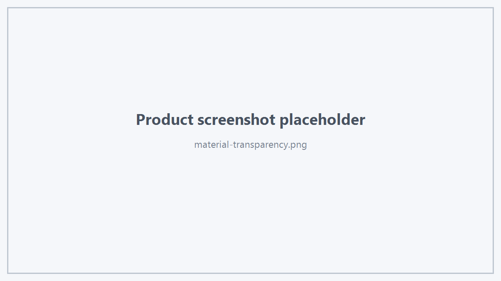
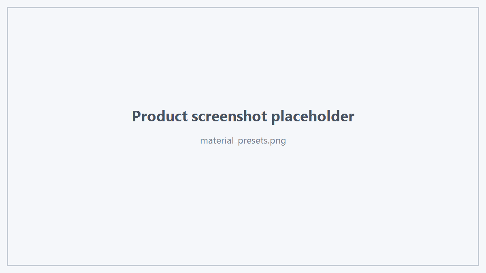

Viewer 的公开外观接口可以分为：
- Viewer Display Style；
- Persistent Target / Object Appearance；
- Selection Appearance；
- Mesh Appearance。
1. Viewer Display Style
viewer.setDisplayStyle(HtsDisplayStyle::EngineeringDefault);
支持：
- Shaded
- ShadedWithCadEdges
- TriangleWireframe
- TransparentAirBox
- EngineeringDefault
独立控制：
viewer.showCadEdges(true);
viewer.showTriangleWireframe(false);
viewer.setAirBoxTransparent(true);
状态查询：
viewer.cadEdgesVisible();
viewer.triangleWireframeVisible();
viewer.airBoxTransparent();
2. Target Color & Transparency
HtsColor4f color{0.2f, 0.6f, 0.9f, 1.0f};
viewer.setTargetColorAndTransparency(
target,
color,
0.25f);
查询：
HtsColor4f currentColor;
float transparency = 0.0f;
viewer.targetColorAndTransparency(
target,
currentColor,
transparency);
3. Object Batch Appearance
viewer.setObjectsColorAndTransparency(
objectIds,
color,
0.30f);
4. PBR Appearance
HtsMaterialAppearance appearance;
appearance.color = {0.72f, 0.74f, 0.78f, 1.0f};
appearance.transparency = 0.0f;
appearance.metallic = 0.85f;
appearance.roughness = 0.30f;
appearance.specular = 0.55f;
viewer.setTargetMaterialAppearance(target, appearance);
多个 Object：
viewer.setObjectsMaterialAppearance(objectIds, appearance);
Transparency 语义
HtsMaterialAppearance::transparency 使用 CAD 常见约定：
这里的 transparency 是该 API 的权威透明度值。
不要把它与 opacity 的方向混淆。

Transparency
5. Material Preset
Selection 可以使用：
viewer.setSelectedMaterialPreset(HtsMaterialPreset::Aluminum);
公开 Preset 包括：
- EngineeringDefault
- NeutralSolid
- AirBoxTransparent
- PECMetal
- Aluminum
- Copper
- Dielectric
- FR4
- RubberAbsorber
- Custom
- SelectedFill
- HoverOutline
- CADBoundaryEdge
- TriangleWireframe
- VertexCandidate
- VertexHover
- VertexSelected
- Preview
- OverlayBoundary
- OverlayExcitation
其中部分预设主要用于 Viewer 工程交互效果，业务程序通常只需要使用与自身场景相关的公开预设。

Material Presets
6. Custom Render Material
HtsRenderMaterial material;
material.baseColor = {0.7f, 0.4f, 0.2f, 1.0f};
material.metallic = 0.7f;
material.roughness = 0.35f;
material.specular = 0.5f;
material.opacity = 1.0f;
viewer.setSelectedCustomMaterial(material);
7. Selection Appearance
viewer.setSelectedColor(color);
viewer.setSelectedOpacity(0.6f);
viewer.setSelectedTransparent();
viewer.resetSelectedStyle();
8. Persistent 与 Interaction Style
推荐业务上区分：
- 持久对象材质：使用 Target / Object Appearance；
- 当前交互效果：使用 Selection API；
- 临时建模效果：使用 Preview API。
这样可以避免业务材质和临时交互状态互相覆盖。
 1.18.0
1.18.0